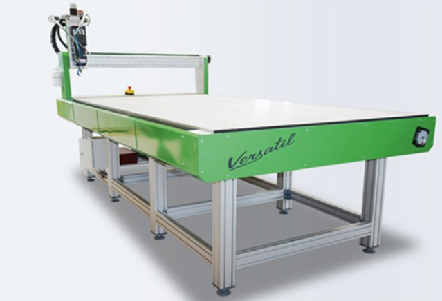
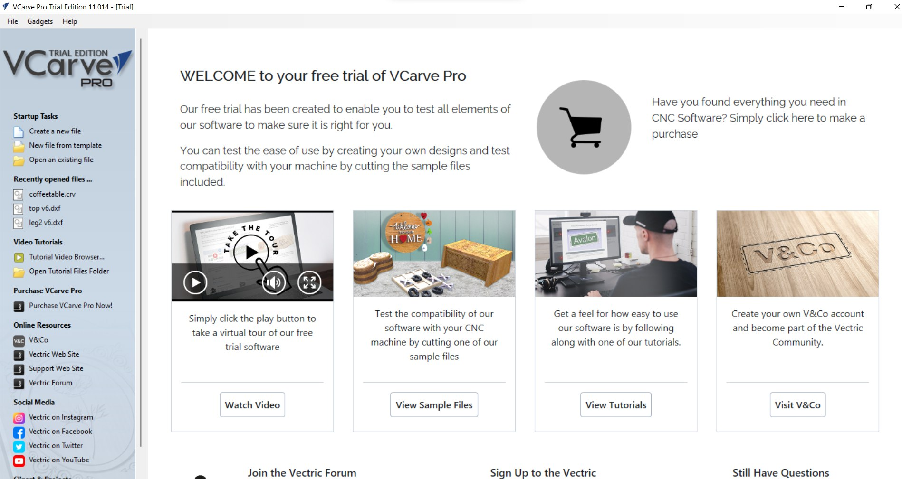
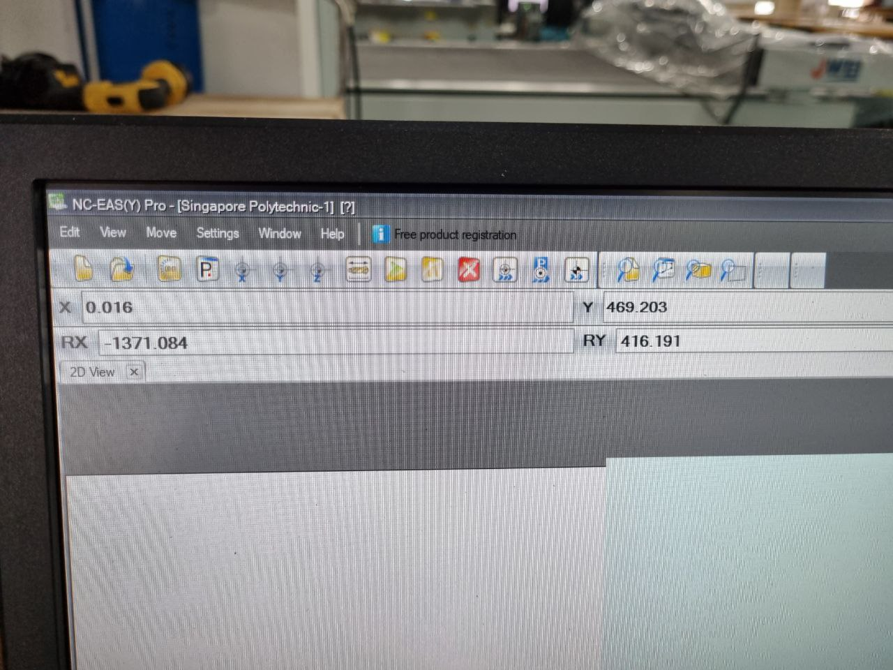
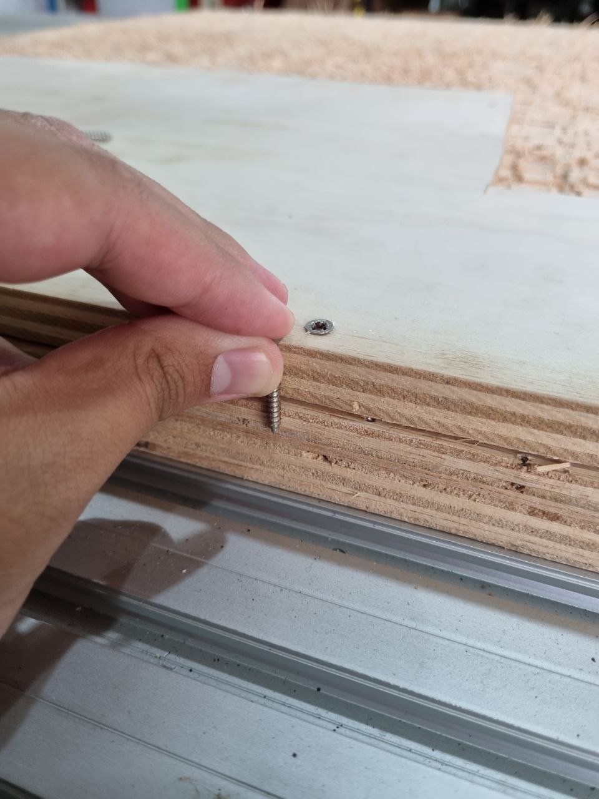
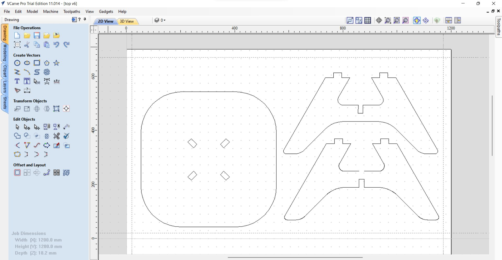

Now in this part I will be going through 2D Computer Controlled Machining with Computer Numeric Cutting (CNC) Machines. You may wonder what is CNC Machining? And why do we need it? Additionally, What are its applications?
CNC machining is the most common subtractive manufacturing technology today and a hugely flexible and robust way to produce custom metal, wood and plastic parts. Using CAD models, CNC machines precisely remove material from a solid block with a variety of cutting tools. It produces parts with tight tolerances and impressive material properties.
CNC Machining has 2 types of operations, milling and turning. To learn more about what these operations are, click HERE. In this module we will focus more of milling operations as it is more common all around! You may have of heard milling during PCB fabrications in the earlier topics and you are right! Milling is used in electronics production. This shows that milling is a popular method of fabrication as it has multitudes of applications. In this page I will be talking about how it can be used to make objects out of 2D pieces such as a wooden board.
2D Computer Controlled Machining enables the production of flatpack items such as furnitures. For example below is a stool that is able to be assembled from parts that are cut form CNC machines. It is made by cutting these shapes from a board of wood!

For this topic we will be learning about how to concieve a CAD design, preparing a g-code with a Computer Aided Machining (CAM) software and how to operate the CNC Machines to produce items like the flatpack stool above! Before we do that we need to learn about our machine. CNC Machines use drillbits to cut out the desired finishes the products needs, typically a flat head drillbit is used as it is able to deliver the required results of a 2D piece. Below is a pic of the different drillbits available.

It is important to know what is the right sizing of toolbits for your work as there is a high probability of tools breaking as it is not hard enough for the work that it does. Sometimes a certian drillbit can be too small to cut a certain piece. This can be due to the nature of the material or the thickness of the material. Thus it is important to research if your drillbit is suitable. Below is a general guide as to what is the right sizes for your work.

Additionally, you can click HERE for a general online guide to CNC Machining!
Before trying out milling my own 3D design I needed to get myself familar with the cnc machines and tools used to transform desgins into actual objects! First off, the cnc machine I used is called the EAS Vesatil, which came all the way from Germany! Below is a picture of it.
Additionally I needed to get use to the g-code generating software that is used to generate the instructions for the EAS versatil cnc machine. Thus I got used to a cnc milling software called VCarve Pro. I downloaded the trial version online to get myself used to the parameters of the software.
Now on to trying out the Versatil cnc machine, all of us tried out making a coaster, which is a simple piece of item which protects your furniture from staining with condensation from drinks. Once I loaded my coaster design I proceeded to set the parameters in the cnc machine. This is done by setting the thickness, the x and y boundaries and loading my g-code into the cnc machine software.
Following that we ensured that the milled material is securely placed onto the the routered surface. We did so by drilling it into the surface! To ensure its drilled in properly we had to ensure that the self-tapping screw was longer than the material thickness.
Following that, we started out cutting the coaster! It was fast and below is how it turned out! The machine did 2 kinds of cuts, a profile cut and a pocket cut. Profile cuts the outline of the item while pocket cleared the center of the coaster to have a recessed circular part. There are much burrs on the side due to the nature of the cut. Upon asking Mr Chew, my lecturer, he said that depending on the drill bit and the direction of cut it will affect your surface finish.

Below is a video of the cut! Do note the drill bit used is a 6mm end mill.
Feeds and speeds:
Now on to my assignment, I wanted to try out making one of the flatpack furnitures myself, thus I drafted a coffee table on Fusion360 to be made on CNC Machine. Below is a preview of my design!
Next up! Its on to VCarve Pro! Below is a sample of how I generated the g-code via VCarve Pro. I loaded my dxf file containing the vectors of my 3D Design above.
Upon generating my g-code its on to loading it into the router software! Similar to the coaster I had to set the X, Y and Z axis parameters and secure the material into the machine bed via drilling screws in. After that I started the milling process!! Below is the video of the coffee table being cut, the feeds and speeds are the same as te coaster mentioned above. Additionally, it is cut by a 6mm end mill.

Following that, similarly like the coaster the coffee table, it had alot of burrs on its surfaces and sanding was required to smoothen the surfaces and ensure overall it had a nice surface finish. From there, Mr Yeo, the staff in-charge of T11C FabLab, helped me and guided me thru on how to use a hand held sander.

Lastly it was assembly, I took the flatpack parts and assembled the table using a rubber mallet. A rubber mallet was needed as the tabs were a tight fit and some force was needed to secure the parts in place as 1 furniture. The assembled piece is shown below.

Upon examining the furniture closely I noticed that the table was imbalanced, which can be seen below. Thus I used a file to balance the 4 legs out and it was positioned perfectly.
After correcting the imbalaced legs, my coffee table is finished! I took it home and now its a perfect piece of furtiture for my living room. Topped with the coaster I made ealier it sure makes a great living room set!

Click here to return back to documentations!!